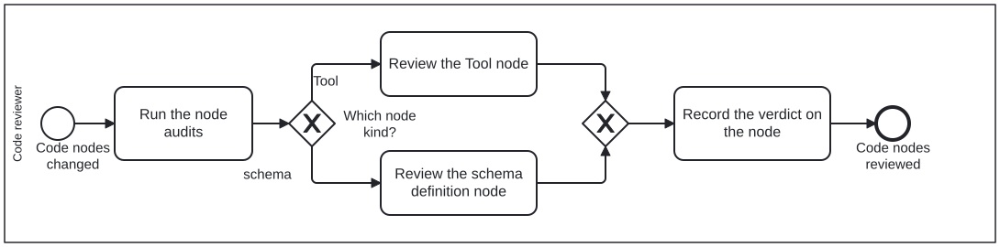

Generated from
cat-harness/processes/kg/review-code.bpmnbygen-processes-viz.ts— do not edit here. All processes
Process_CodeReview · advisory · 4 step(s)
Judging changed CODE NODES — Tool definitions and schema definition nodes — on whether they are correct NODES, not merely correct code.
You are in this process when what changed is a node that happens to be TypeScript. The distinction is the whole reason it is separate from ordinary code review: a file can compile, pass its tests, and still declare the wrong thing, name a skill that does not exist, or advertise a mechanism the pipeline does not actually invoke.
The gateway picks by node KIND because the questions differ. A Tool is judged on whether its mechanism is the one that runs; a schema definition node on whether it says what it is and its references resolve.

| lane | role | what it does here |
|---|---|---|
| Code reviewer | code-reviewer |
Forks on node kind but never on verdict: Task_ReviewTool catches a skill that is satisfied but whose mechanism is reachable from nowhere, Task_ReviewSchema catches a visual fact with two homes instead of one, and both branches converge on the same Task_RecordVerdict — so whichever kind of node changed, the reader of the finding sees one recording discipline, not two. |
Every one of the 4 step(s) is documented.
| step | lane | skill / sub-process | what it does |
|---|---|---|---|
Run the node auditsTask_RunNodeAudits |
Code reviewer | code-node-review |
check:tools, kg:audit and typecheck. Read the kg-qa sidecar ratherthan the summary: it is written per node so an inherited defect and a new one are distinguishable. |
Review the Tool nodeTask_ReviewTool |
Code reviewer | skills-and-toolscovered-is-not-reachable |
Does it name skills, and do they resolve? Is the mechanism it advertises the one that actually runs? Are its IRIs minted rather than written out? And the question a covered skill hides: is the COMMAND reachable, or only the skill satisfied? A skill can be served by the neighbours of its mechanism while the mechanism itself is reachable from no node, and check:tools reports it as covered and is right to. |
Review the schema definition nodeTask_ReviewSchema |
Code reviewer | code-node-reviewsite-presentation-assets |
Does the node declare what KIND of node it is? Does a widened type carry its mirrors? Does a removed field leave a reason behind, so the next author does not re-add it in good faith? And where the node RENDERS to something the site serves — a colour, a glyph, a theme’s tokens — does a Tool maintain that artefact, and does the visual fact have only one home? The node decides; the stylesheet reports. |
Record the verdict on the nodeTask_RecordVerdict |
Code reviewer | code-node-review |
Findings are advice, not commits — the same separation the generic reviewer lane keeps. Record them where the next reader meets the node. |
Every one of the 1 decision(s) is documented.
| decision | what decides it | branches |
|---|---|---|
Which node kind?GW_NodeKind |
What kind of node is under review? Tool goes to the Tool-node review; schema goes to the schema-definition review. |
Tool → Review the Tool node schema → Review the schema definition node |